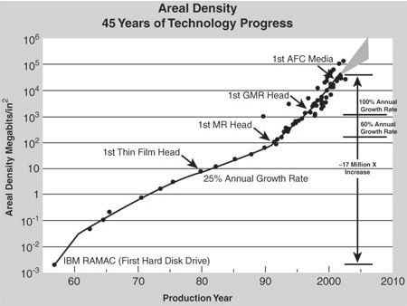
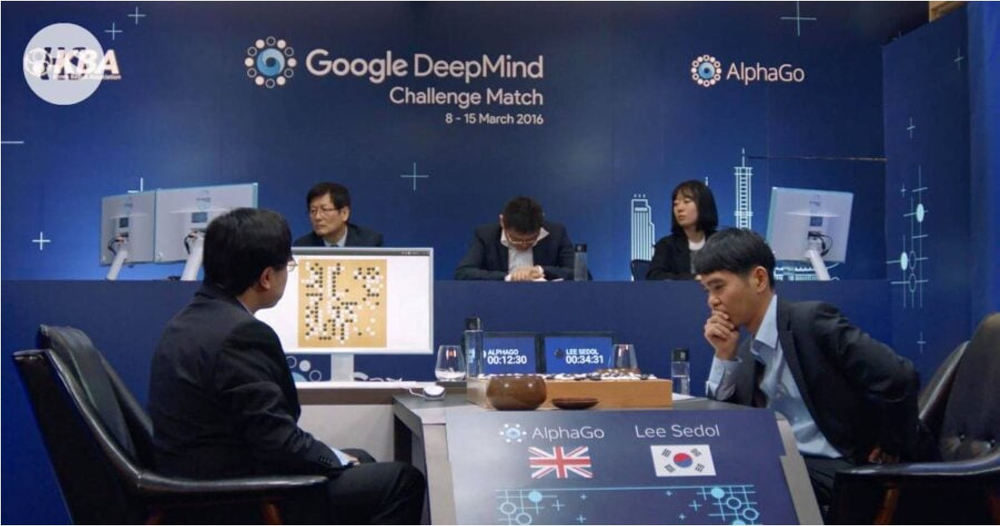
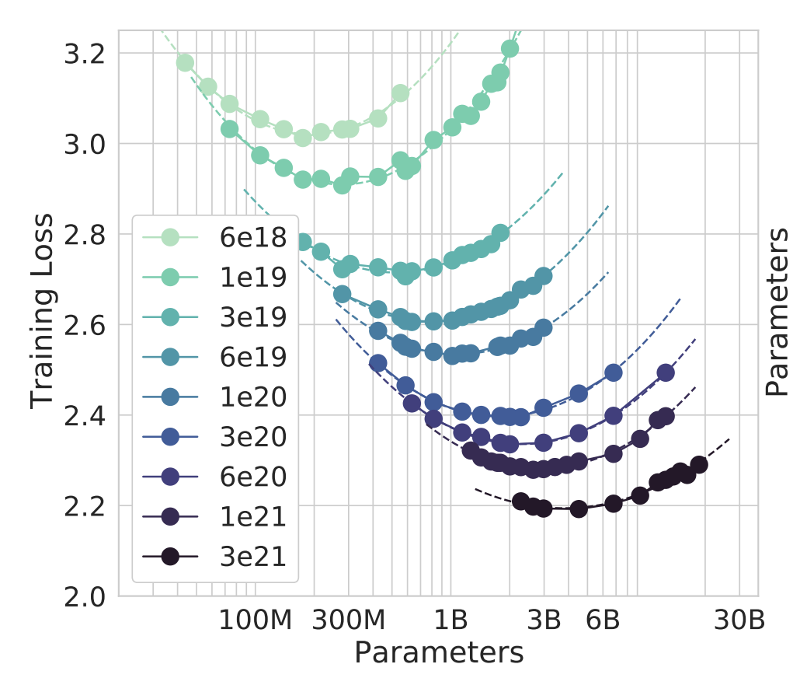

应对课程向 3 学时调整，将会有 1/4 的课程内容为补充选讲内容，讲授本课程相关的扩展知识，不作为考试内容。
int return_1() {
int x;
for (int i = 0; i < 100; i++) {
// Compiler will assign [%0] an assembly operand
asm("movl $1, %0" : "=g"(x)); // "x = 1;"
}
return x;
}
The actual contents of minds are tremendously, irredeemably complex; we should stop trying to find simple ways to think about the contents of minds, such as simple ways to think about space, objects, multiple agents, or symmetries. All these are part of the arbitrary, intrinsically-complex, outside world. They are not what should be built in, as their complexity is endless; instead we should build in only the meta-methods that can find and capture this arbitrary complexity.



Heuristics is dead, Policy is Heuristics, LLM is Policy, Mechanism is King.
原文：“Tape is Dead, Disk is Tape, Flash is Disk, RAM Locality is King.” (Jim Gray, 2006)